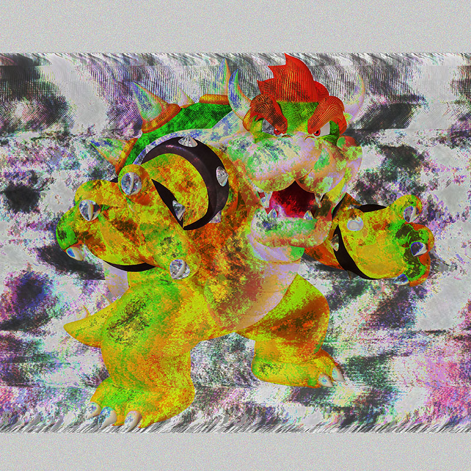

"Psycle", RPG Maker and Photoshop, Collaborated with Vanna Dao, 2020
Psycle is a 2D pixel art game that centers on the idea of life during the Covid-19 pandemic. The player, who is a student, lives through a loop of daily life activities such as sleep, shower, and homework. When stay at home orders were placed this year, many students were faced with the dilemma of adjusting to only online classes with no real certainty of how it would develop. Students best interests were and are currently pitted against available resources. Our game, Psycle, metaphorically exhibits the continuous struggle that most students are adhering through this ‘cycle’ of uncertainty, fear, and anxiety.
"Poetic Clock",P5, 2019
A clock made using processing.The color will change every 12 hrs.
"Bitmap Mushroom Image", P5, 2019
Bitmap Image I made using processing.

"Bitmap Mushroom Image", P5, 2019
Data bending of the classic Super mario character, Bowser.
"Mina's Braids", Digital Image, 2020
Durational project